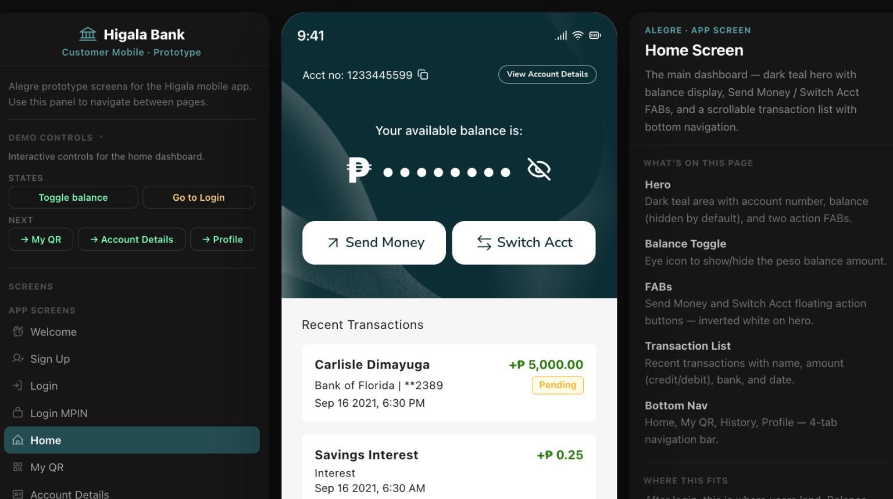
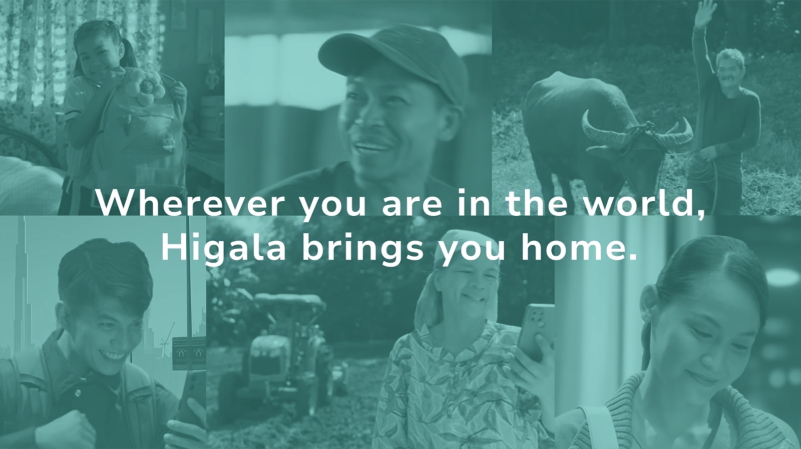
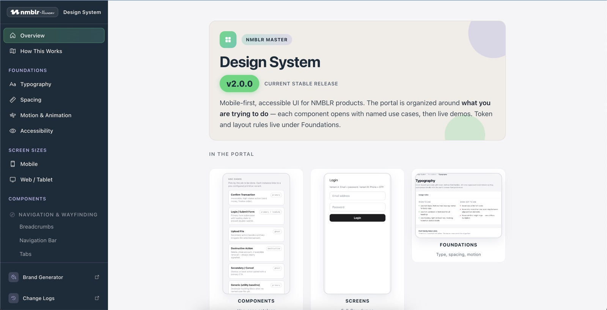
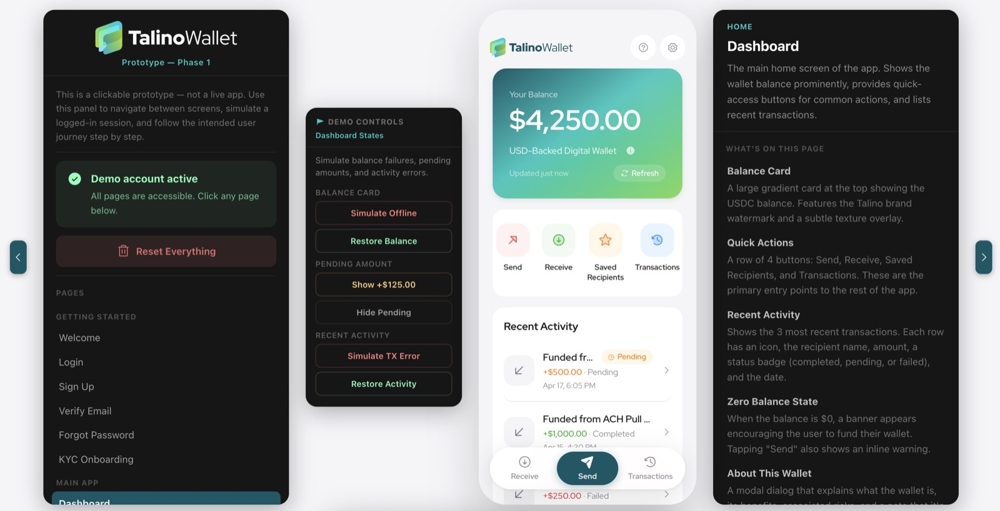
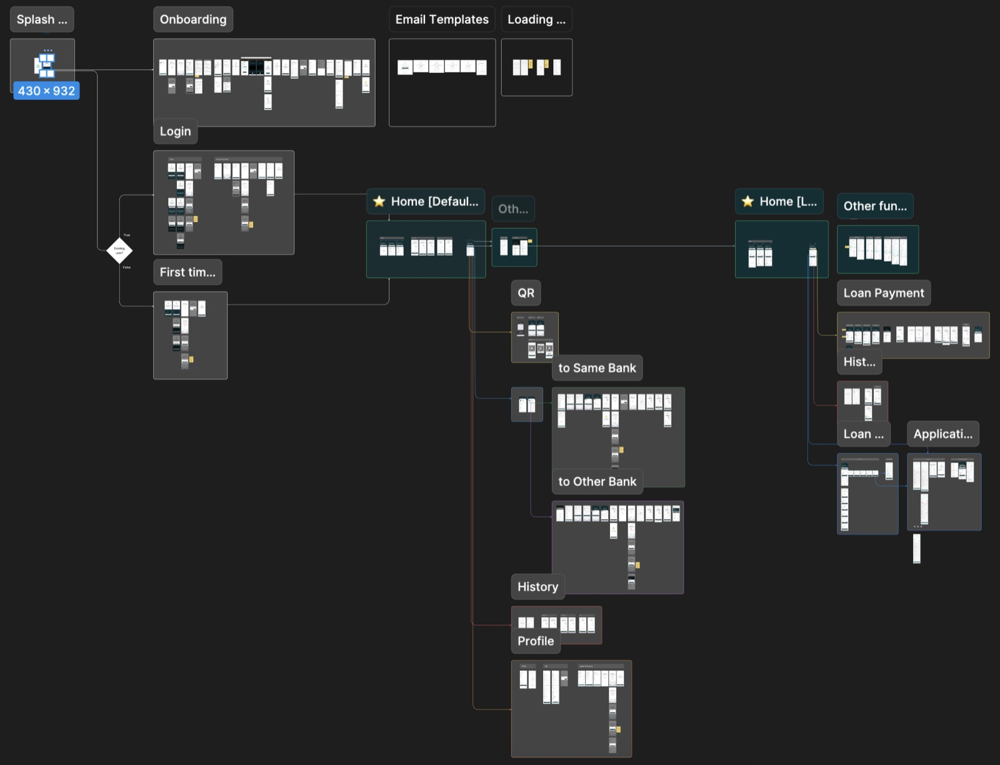
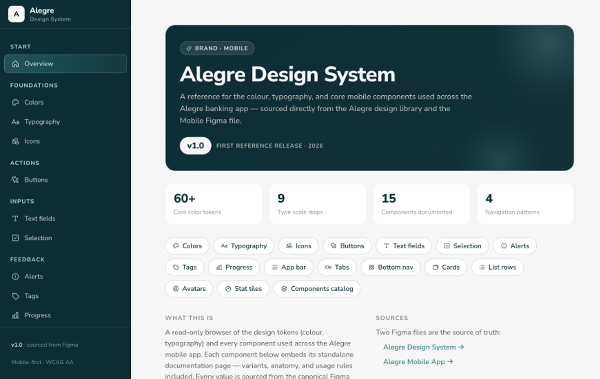
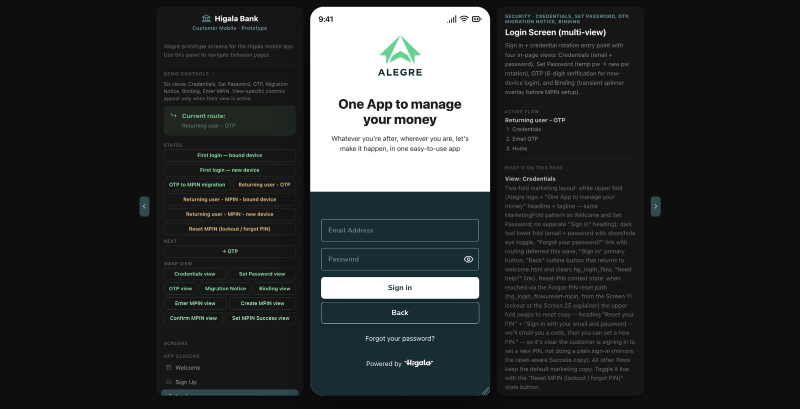

Higala · 2026
Reinventing the Design Process with AI at Higala

Overview
For most of my time designing Higala, our process followed the familiar path.
Research → product documentation → lo-fi to hi-fi mockups → prototyping → user testing. In the first quarter of the year, that path changed. Powered by the AI tools now available to the team, we rebuilt how design, product, and engineering collaborate — collapsing the distance between documentation, prototype, and implementation.
The Challenge
Higala is a banking platform for the underserved — a domain where clarity, trust, and correctness aren’t negotiable.

The traditional design pipeline worked, but it was linear and slow: every handoff introduced back-and-forth, and lapses often surfaced only after a full sprint of work. Leveraging for the rural and underserved should also mean leveraging the process and the time it takes to ship. The goal was to compress the sprint loop without lowering the bar, and to make quality a shared responsibility rather than a late-stage discovery.
The Genesis
Building v0 DESIGN.md
The design team was first tasked with creating a skeletal design system for organization-wide use: zero themes, a blank brand — an intentionally agnostic system ready to be redressed for any future project.
That system became the foundation for generating prototypes across the whole product team for internal launches. Crucially, documentation and prototype now live in the same repository. The discovery phase happens through the prototype — managers and designers make their adjustments directly in the same artifact.
The result was immediate: less back-and-forth, more deep work.


Implementation
The Higala Workflow
Higala was already an ongoing project with an existing design system, so adoption started from a running start. What remained was to:
- Author the Design.md — giving our AI agents clear context on our components.
- Prototype the design system index.
- Build out the existing screens for AI prototyping — starting with onboarding through the Home screen.
With the components’ context established, extending the product became a matter of composition rather than reconstruction.
Adoption was fast. PRDs and UX docs were already in place, and prototypes were audited against documentation. Features and issues were properly tracked, and — critically — every individual on the team had a stake in what shipped.



The Results
A shared workflow where AI became the connective tool: clearer handoffs, faster iteration, and cross-team feature ownership.
- Clearer handoffs. The gap between intent and implementation narrowed.
- Faster adjustments and rework. Iteration happens at a fraction of the previous cost.
- Cross-team feature ownership. Adding a feature now runs through UX-document checks and prototype handoffs — a shared responsibility, not a solo one.
- Earlier accountability. The team no longer waits for a full sprint to surface lapses. Everyone owns the features from day one; bugs and discrepancies get flagged quickly through PRs and communication channels.
- Expanded roles. Each person’s role has stretched toward the cross-functional, with AI as the connective tool.
For everyone on the team, working alongside AI has widened the scope of what a single role can hold. For me as a designer, it has sharpened the one thing I care about most: being the bridge between product and engineering is clearer now than it has ever been.